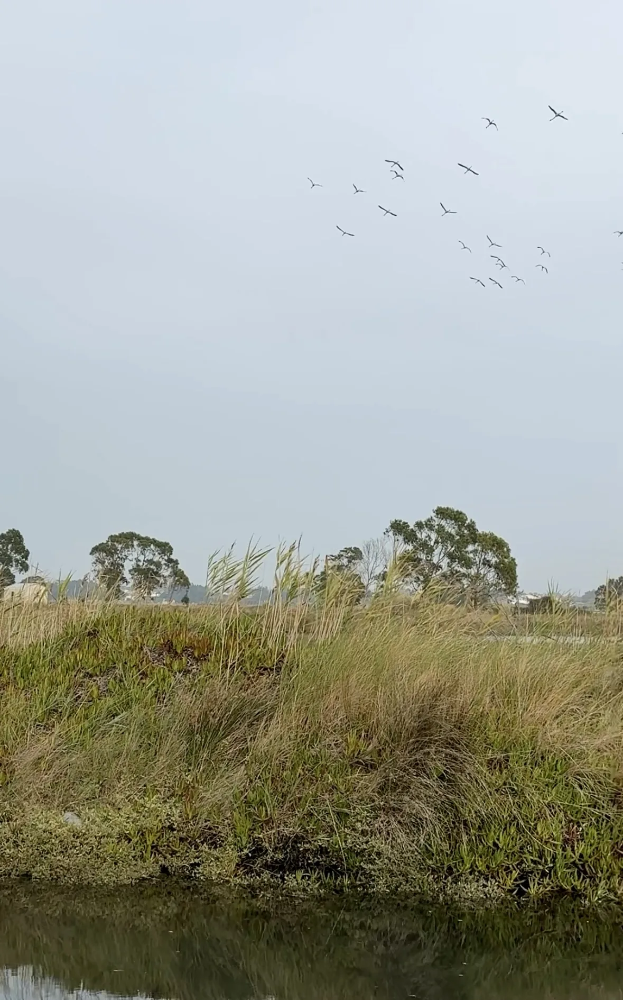
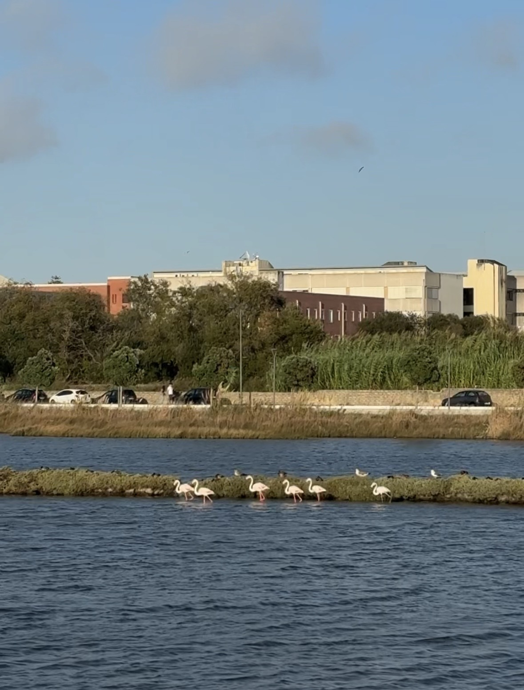
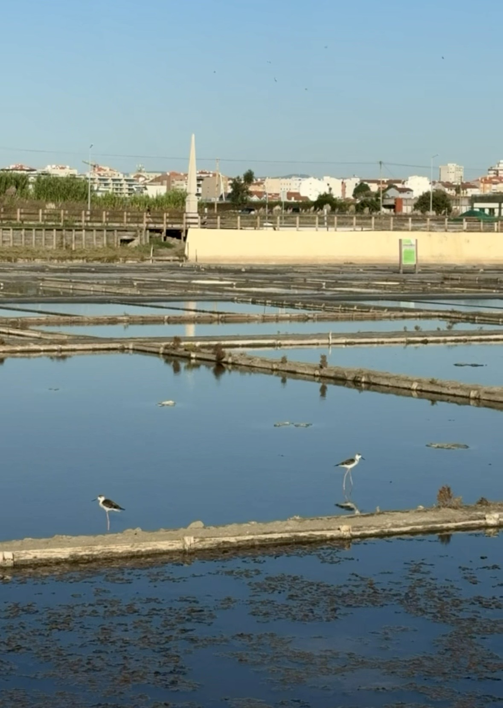
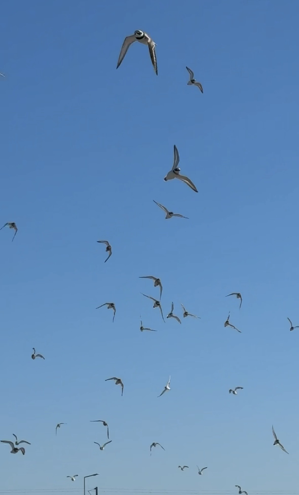
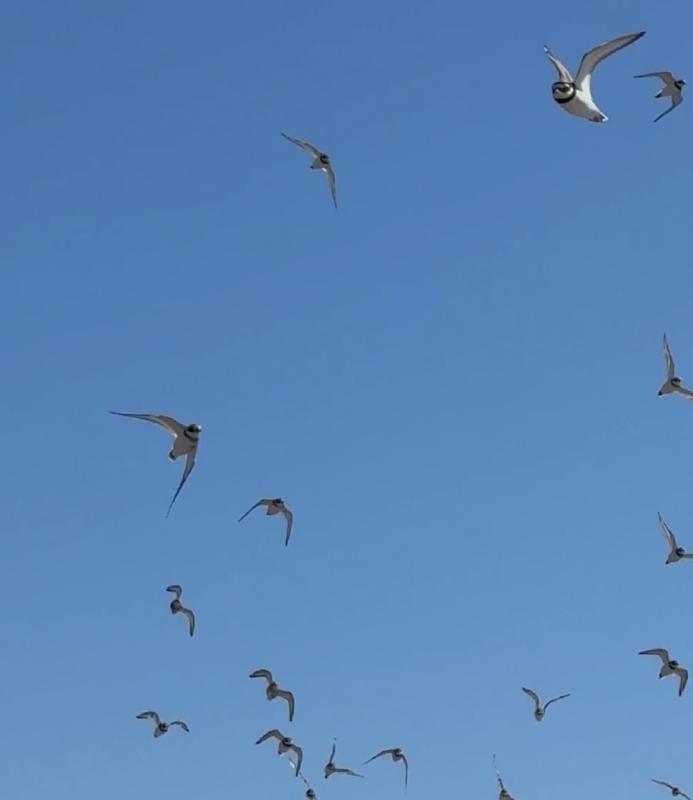
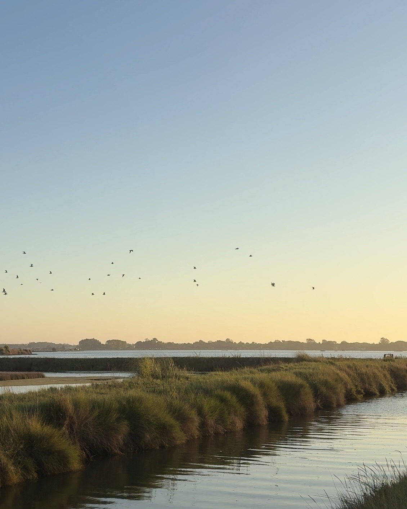
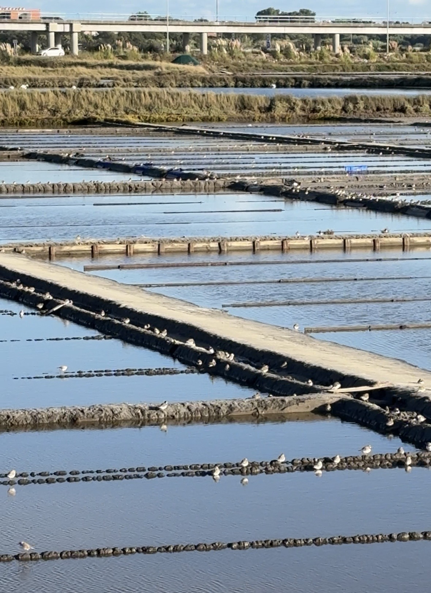
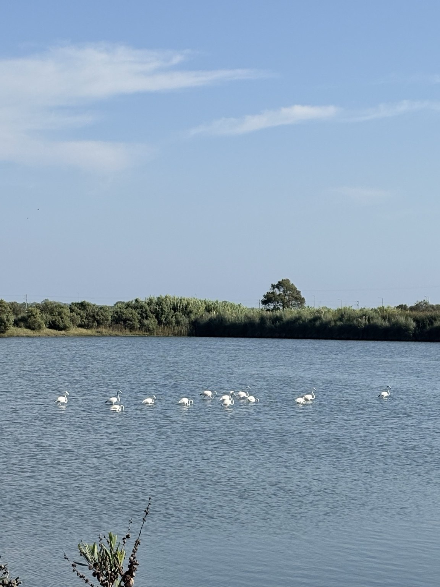

The Ria is a living world
It belongs to itself
I come here to watch birds moving over the water, between salt pans and reeds. These places are not decorations around our city. They are part of a living ecosystem that exists whether people notice it or not.
A Ria é um mundo vivo
Pertence a si própria
Venho aqui observar as aves que passam sobre a água, entre as salinas e os caniçais. Estes lugares não são decoração da cidade. Fazem parte de um ecossistema vivo, quer as pessoas reparem nele, quer não.
This is their home
Before any development plans, this lagoon landscape was already home to birds.
The nearby salt pans, shallow waters and marsh vegetation are places where birds feed, rest and move through the Ria. They are not empty land waiting to be used. These birds are not decorations in a scenic view. This landscape is part of their habitat.
Este é o seu lar
Antes de qualquer plano de urbanização, esta paisagem lagunar já era o lar das aves.
As salinas próximas, as águas pouco profundas e a vegetação dos sapais são lugares onde as aves se alimentam, descansam e circulam pela Ria. Não são terrenos vazios à espera de utilização. Estas aves não são elementos decorativos de uma paisagem bonita. Esta paisagem faz parte do seu habitat.


These photographs show the wider lagoon and neighbouring salt pans, not necessarily birds within the proposed construction footprint. The potential effects of development require independent ecological assessment.
Estas fotografias mostram a paisagem lagunar e as salinas vizinhas, não necessariamente aves dentro da área prevista para construção. Os possíveis impactes da urbanização exigem avaliação ecológica independente.
Where do the birds go after sunset?
Around sunset, something happens above Antiga Lota. I'm out walking, the light is fading, and suddenly I notice birds crossing the sky — ducks, gulls and other flocks. Some pass right over the old port land, others along its edges, on their way across the lagoon. I see it again and again. I don't know whether each flock is migrating or simply travelling between feeding and resting places. Either way, this space is part of their journey.
Now imagine a hotel and homes here: bright windows, outdoor lights, glass and more noise, where today the birds fly through the evening air. Would their routes change? Could the lights affect them? We shouldn't have to guess after everything is built.
There are good reasons to ask now. A study in Portugal's Tagus estuary found that lighting changed how some shorebirds used habitat and fed at night. A radar study on the Croatian coast linked artificial light to changes in nocturnal migrants' flight altitude and speed. And a review of 36 studies found effects of night lighting on birds' behaviour and physiology. Effects differ by species; none of these papers tells us exactly what would happen at Antiga Lota.
That's why I want an independent survey of the birds' evening flights — which species pass here, when, in which direction and at what height — before decisions about building height, glass and lighting become irreversible.
The land isn't empty. The water isn't empty. And neither is the sky.
Para onde vão as aves depois do pôr do sol?
À hora do pôr do sol, acontece uma coisa sobre a Antiga Lota. Estou a passear, a luz começa a desaparecer e, de repente, reparo nas aves a atravessar o céu — patos, gaivotas e outros bandos. Alguns passam mesmo por cima dos terrenos do antigo porto; outros seguem pelos lados, atravessando a paisagem da Ria. Vejo isto muitas vezes. Não sei se cada bando está em migração ou se simplesmente se desloca entre locais de alimentação e descanso. Mas, de uma forma ou de outra, este espaço faz parte do seu percurso.
Agora imaginem aqui um hotel e habitações: janelas iluminadas, luzes exteriores, vidro e mais ruído, precisamente onde hoje as aves cruzam o céu ao entardecer. Será que mudariam de rota? A iluminação poderia afetá-las? Não devíamos deixar estas perguntas para depois da construção.
Há razões científicas para as fazer já. Um estudo no estuário do Tejo mostrou alterações na utilização do habitat e na alimentação noturna de algumas aves limícolas devido à iluminação. Um estudo com radar na costa da Croácia associou a luz artificial a alterações na altitude e na velocidade de voo de aves migradoras noturnas. E uma revisão de 36 estudos encontrou efeitos da iluminação noturna no comportamento e na fisiologia das aves. Os efeitos variam consoante a espécie; nenhum destes trabalhos permite prever exatamente o que aconteceria na Antiga Lota.
É por isso que peço um estudo independente dos voos das aves ao entardecer — que espécies passam, a que horas, em que direção e a que altura — antes de as decisões sobre altura dos edifícios, vidros e iluminação se tornarem irreversíveis.
A terra não está vazia. A água não está vazia. E o céu também não.

Photographs and field videos
These are my photographs of birds, water and landscapes in the salinas and lagoon near Antiga Lota. They show the wildlife of the wider area, not necessarily the exact site of proposed construction.
Fotografias e vídeos no terreno
Estas são as minhas fotografias das aves, da água e das paisagens das salinas e da laguna perto da Antiga Lota. Mostram a vida selvagem da zona envolvente, não necessariamente o terreno exato da construção proposta.










Swipe or use the arrows · Select a photo to open the original · Photos by the project authorDeslize ou use as setas · Abra uma fotografia para ver o original · Fotografias da autora do projeto
Videos will be published when the original clips are available; there are no empty video players or invented footage on this page.
Os vídeos serão publicados quando os ficheiros originais estiverem disponíveis. Não há vídeos fictícios nesta página.